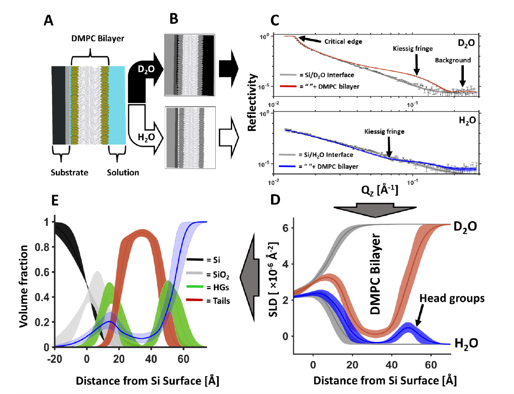
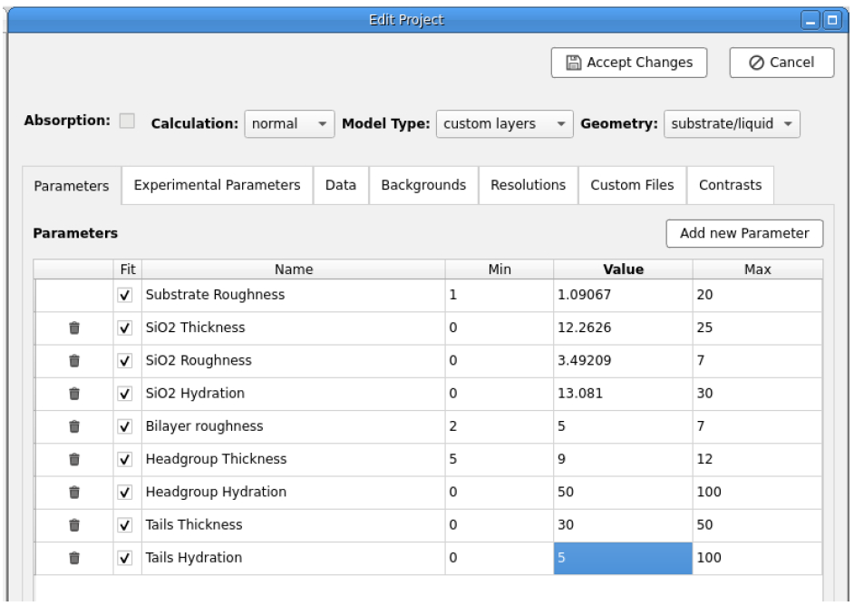

3. Fitting a Custom Model of the Bilayer by Volume Fraction#
We will now create a custom model of the interfacial structure coated with a 1,2-dimyristoyl-sn-glycero-3-phosphocholine (DMPC) bilayer and fit the experimental reflectometry data. Starting with the project you have created in part two, using the skills you’ve learned you will create a custom model to resolve the structure of the supported lipid bilayer.
Below is an example of the encoding and decoding of the structure of a DMPC bilayer at the solid-liquid interface by neutron reflectometry. Two solution isotopic contrasts (D2O; red, and H2O; blue, C) are used to resolve the scattering length density (SLD) profiles (D) across the surface. The resolved structural parameters are ultimately used to resolve the component volume fraction vs. distance profile across the surface:

The simultaneous fitting of these same two solution isotopic contrast data sets (H2O and D2O) was used to resolve the interfacial lipid bilayer structure here, which will be constrained against the data for the Si Interface only. You will be doing the same thing in RasCal 2 but with more data! To test your fitting skills
Let’s start by setting up the DMPC contrasts and fitting parameters.
Edit the project and in the Data tab add for the DMPC supported lipid bilayer. This is found in the RasCal 2 Practical Student/DMPC data named folder as Si_DMPC_D2O.dat, Si_DMPC_SMW.dat, and Si_DMPC_H2O.dat.
You will note that there are three data sets here under three solution isotopic contrast conditions. D2O and H2O are the same as for our previously fitted Si surface contrasts but we have an additional contrast called SMW. This is silicon matched water (38% D2O and 62% H2O). This additional contrast provides additional constraint for our model fitting.
Add a background for the SMW contrast (like you did previously for the H2O contrast).
Add a new bulk out for the SMW contrast with a value of \(2.07\text{e-6}\mathring{A}^{-2}\). Set a min and a max around this.
Next we want to start building a model of the DMPC interfacial structure.
In do this we identify our “knowns” and “unknowns”. We know the scattering length densities of the DMPC headgroups and tails:
\[Tails = -0.39 \times 10^{-6}\mathring{A}^{-2}\]\[\text{Head groups} = 1.98 \times 10^{-6}\mathring{A}^{-2}\]But this only takes into account a situation where the layer is composed of a single component only. The DMPC bilayer, like the SiO2 layer is immersed in solution and therefore hydrating water is present in the head groups and potentially in the tails if the bilayer has defects, therefore we should fit two hydration parameters (heads and tails) to experimentally resolve these unknowns. Additionally we should fit the tails thickness, headgroup thickness, and a single bilayer roughness parameter (to account for undulations across the bilayer). Add these to the Parameters tab using the bounds shown below.

Now we need to edit the custom model to add the DMPC bilayer structure. Go to the General tab and click Edit. Now edit the custom model script to add the new unknown parameters and the known parameters. Define layers for the headgroups and tails of the bilayer and create two new contrast cases both with silicon oxide layers but additionally with a bilayer layers across the interface as well (Headgroup; Tails; Headgroup).
Hint
How to construct your bilayer parameters.
To complete this assignment you need to describe a structure across the interface for three data sets from a DMPC coated silicon surface which is composed of the following layers:
([oxide, Head, Tail, Head])
Below is an example of this done with one Headgroup and SiO2 layers only as a guide:
def custom_model(params, bulk_in, bulk_out, contrast):
# Fitted parameters i.e. unknowns
sub_rough = params[0]
oxide_thick = params[1]
oxide_roughness = params[2]
oxide_hydration = params[3]
Bilayer_roughness = params[4]
Headgroup_thickness = params[5]
Headgroup_hydration = params [6]
Tails_thickness = params [7]
Tails_hydration = params [8]
# knowns
oxide_SLD = 3.41e-6
DMPC_Heads_SLD = 1.98e-6
# Make the layers
oxide = [oxide_thick, oxide_SLD, oxide_roughness, oxide_hydration, 2]
Heads = [Headgroup_thickness, DMPC_Heads_SLD, Bilayer_roughness, Headgroup_hydration, 2]
# Match the layer stack to the contrast list in RasCal 2
match contrast:
case 1 | 2:
output = np.array([oxide])
case 3:
output = np.array([oxide, Heads])
case 4:
output = np.array([oxide, Heads])
case 5:
output = np.array([oxide, Heads])
return output, sub_rough
Caution
Parameter names in the RasCal custom model cannot have spaces between words while in the RasCal GUI parameter list they can.
Once you have added the new data sets and updated the custom model compile your new script by saving the script and clicking Accept changes in the project window. It will not compile if there are errors. You should now see three additional NR data sets appear in the Plots window. Run a simplex fit to resolve the structure of the DMPC coated silicon surface.